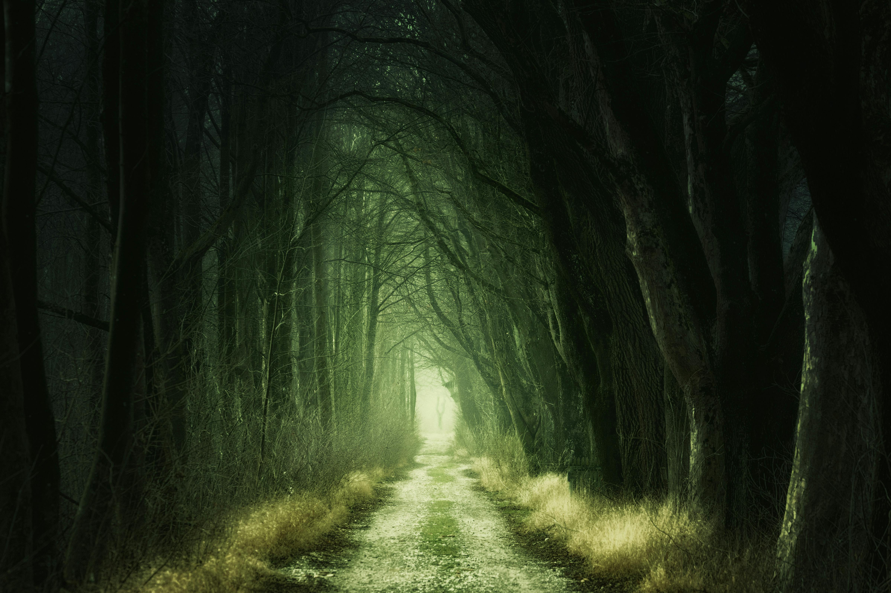
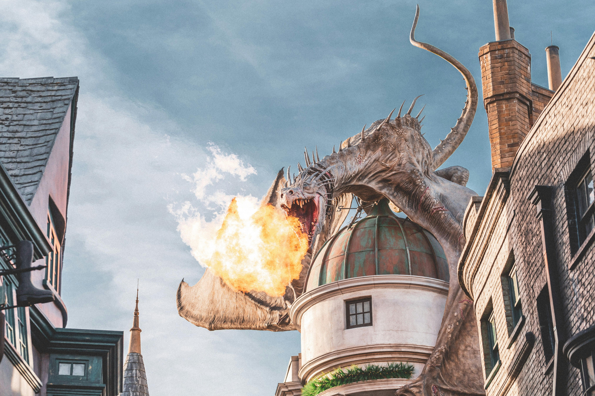
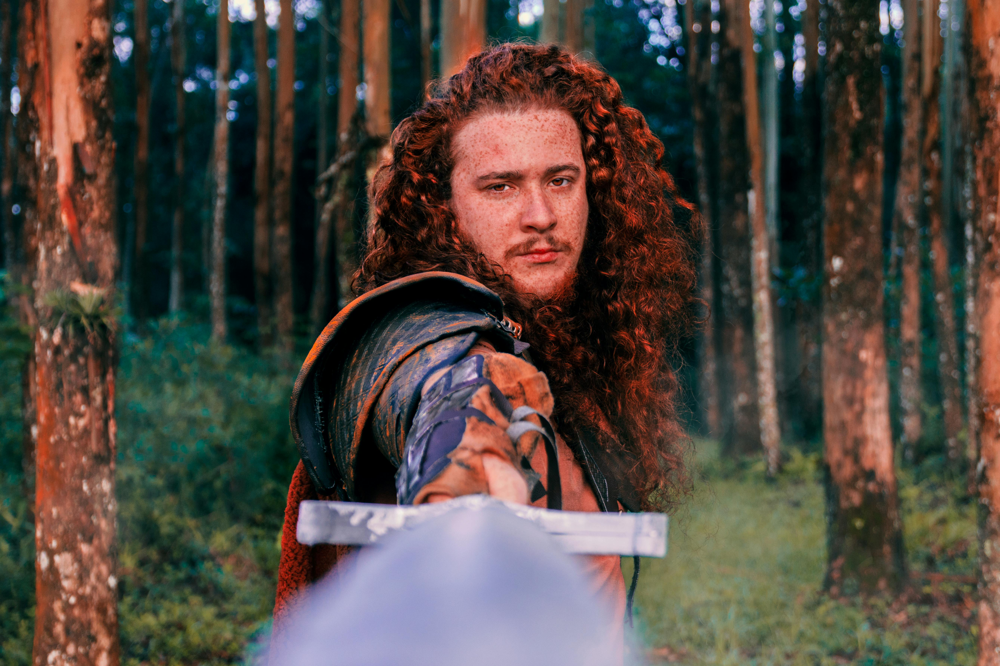
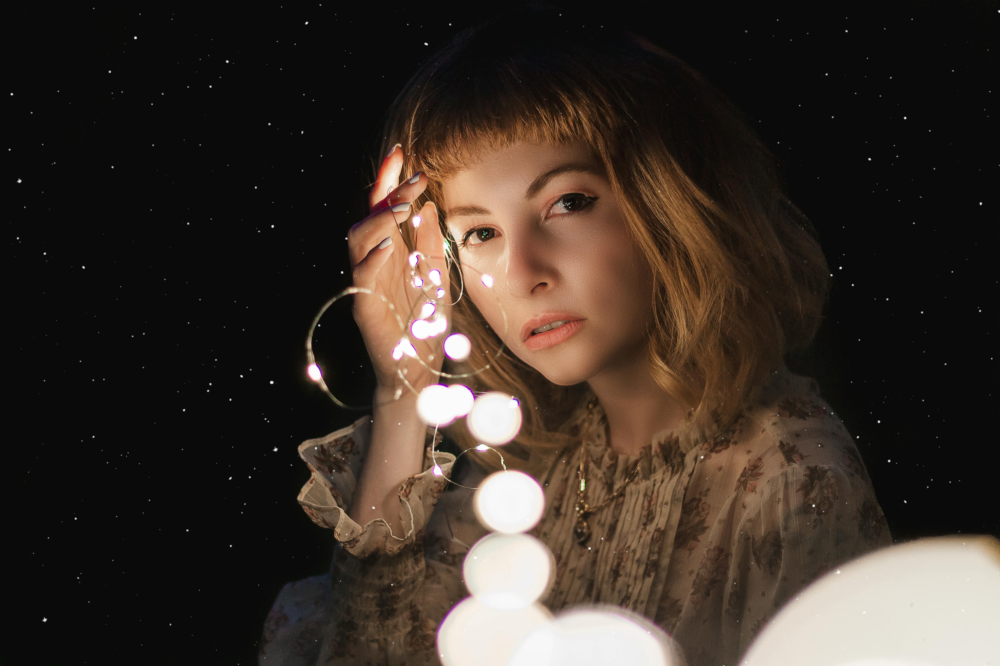
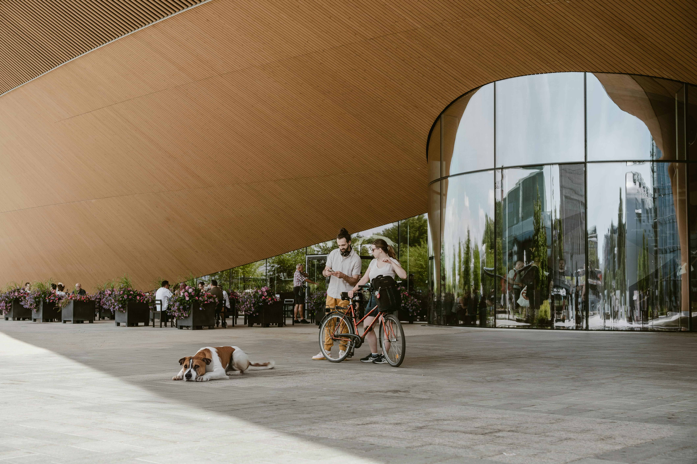

Fantasiaatikot
Suomalainen fantasiaharrastajien yhteisö vuodesta 2022
Tutustu fantasiaan kanssamme
Matkaa maailmaan, jossa legendat heräävät eloon ja salaperäiset olennot odottavat löytäjäänsä...

Maailmat
Matka mystisiin maailmoihin

Hirviöt
Kurkistus pimeälle puolelle

Sankarit
Seikkailu, taikuus, sankaruus
Keitä me olemme?
Tutustu toimintaamme usein kysyttyjen kysymysten avulla...
Tarkoituksemme on tuoda suomalaiset fantasiaharrastajat yhteen. Järjestämme tapaamisia viikottain ja
pyrimme
rakentamaan yhteisön, jonka yhteinen jaettu intohimo on fantasia. Sinun ei tarvitse olla
kokenut harrastaja, vaan voit olla vasta-alkaja tai vain kiinnostunut aiheesta. Tervetuloa mukaan!

Voit liittyä mukaan toimintaamme matalalla kynnyksellä tulemalla viikottaisiin tapaamisiimme.
Olemme koonneet viikottaiset tapaamispaikat ja -ajat alla olevaan taulukkoon. Voit valita itsellesi
sopivimman
ajan ja paikan.
Paikalle päästyäsi voit vain tulla sisään täysin maksutta. Tule ilmoittamaan
kokoontumisten ohjaajalle saapumisestasi ja täten voimme ottaa sinut mukaan toimintaamme.
| Päivä | Aika | Kaupunki | Paikka |
|---|---|---|---|
| Maanantai | 18:00 | Helsinki | Keskustakirjasto Oodi |
| Keskiviikko | 17:00 | Tampere | Pääkirjasto Metso |
| Perjantai | 19:00 | Turku | Kaupunginkirjasto |
Toimintamme on täysin vapaaehtoista ja avointa kaikille. Voit tukea toimintaamme osallistumalla
tapaamisiin,
jakamalla tietoa toiminnastamme ja kutsua ystäväsi mukaan. Voit myös tukea toimintaamme taloudellisesti
lahjoittamalla varoja toimintaamme varten.

Ryhmämme jäseniä

Asuloistua Halloweenina

Tapaamispaikkamme Oodi
Anna palautetta
Annathan toiminnallemme palautetta, se on tärkeää meille...
Oliko toimintamme hyödyllistä?